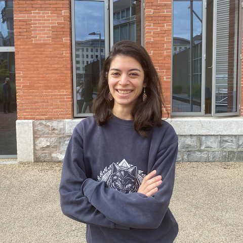

SWC/GCNU Neuroinformatics Unit
Who we are



ethology: overview
- mix-and-match computer vision tools
- For example:
- Use few-shot detectors to assist labelling

Building novel atlases

Data management

The NeuroBlueprint specification

Example project
└── project/
├── rawdata/
│ └── sub-001_id-5645332/
│ ├── ses-01_date-20230310/
│ │ ├── ephys/
│ │ │ ├── sub-001_ses-01_recording-01.bin
│ │ │ └── sub-001_ses-01_probe-3A.imec0
│ │ └── behav/
│ │ ├── sub-001_ses-01_camera-01.wav
│ │ └── sub-001_ses-01_data-responses.csv
│ └── ses-02_date-20230311/
│ └── anat/
│ └── sub-001_image-brain.tiff
└── derivatives/
└── sub-001_id-5645332/
├── ses-01_date-20230310/
│ ├── ephys/
│ │ └── sub-001_ses-01_data-spikes.npy
│ └── behav/
│ └── sub-001_ses-01_data-poses.csv
└── ses-02_date-20230311/
└── anat/
└── sub-001_data-cellcounts.csvDataShuttle

- Validate existing projects
- Create and configure new projects
- Create folders with real-time validation
- Upload and download data
- Keep logs of all actions